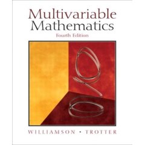

| Homework.
 |
||||||||||||||||||||||||||||||||
 Office: Milner 303
Office: Milner 303 {kind=link}
| Course Content: | Nota Bene: Our course, like many of the other sections of Math 311, differs somewhat from the catalog description! You may find a projected syllabus/schedule here. |
| Special Note: | Your goal in this course, as in every course that you ever take, should be mastery of the material. Anything less is aspiring to mediocrity and doing yourself a disservice. There are several things that I will expect from you. One is to read the section in the text that we will be covering before we meet. Come to class ready to ask questions about what you do not yet know. After class, re-read the text and your notes, and do some exercises to complete your mastery of the material. Also, ask questions in class, lots of them. |
| Course webpage: |
/~sottile/teaching/06.2/311.html
Departmental 311 Page |
| Grading You will be expected to attend all class meetings; I do keep track of such matters, but allow a few absences before penalties begin. There will be two in-term exams, each worth 20% of your final grade and the final exam will be worth 40%. The remaining 20% will be homework and attendance. |
Exam Schedule
| First exam: | Tuesday, 10 or Thursday 12, October. |
|
| Second exam: | 21 November. | |
| Final Exam: | Friday 8 December 12:30-14:30 |
Homework:
Homework will be collected on Thursdays. Current Assignment.
Late homeworks are not accepted. It may not be possible to mark all problems assigned. A few of the problems will be corrected and graded each week. Nevertheless, for your own benefit, you will be required to hand in all the assigned problems. Your score will be based partially upon completing all assigned problems and partially upon the marks obtained in the problems which are marked by the grader. The two lowest homework scores will be dropped before computing your grade.
Absences: While I do take attendance, your first few absences will not count. However, I do not give make up exams. If you have a valid reason (medical or family emergency) for missing an exam, then I will instead give more weight to the final exam, or, on rare occasions, give you an alternative exam before the scheduled exam. Missing an exam without a valid reason results in a score of zero for that exam.
COPYRIGHT POLICY: All printed materials disseminated in class or on the web are protected by Copyright laws. While personal use is permitted, sale of any of these materials is strictly prohibited.
University wide policies and statements:
Americans with Disabilities Act (ADA) Policy Statement
The following ADA Policy Statement (part of the Policy on Individual Disabling Conditions) was submitted to the University Curriculum Committee by the Department of Student Life. The policy statement was forwarded to the Faculty Senate for information.
The Americans with Disabilities Act (ADA) is a federal anti-discrimination statute that provides comprehensive civil rights protection for persons with disabilities. Among other things, this legislation requires that all students with disabilities be guaranteed a learning environment that provides for reasonable accommodation of their disabilities. If you believe you have a disability requiring an accommodation, please contact the Department of Student Life, Services for Students with Disabilities, in Room 126 of the Koldus Building or call 845-1637.Academic Integrity Statement "An Aggie does not lie, cheat, or steal or tolerate those who do." For more, see the Honor Council Rules and Procedures.
Modified Since: 4 September 2006 by Frank Sottile